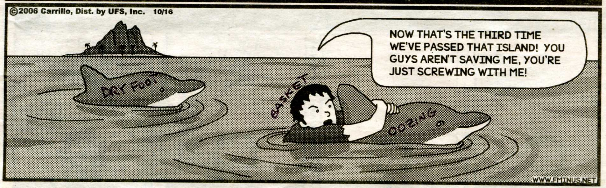

The ‘Lost Hash Tribes of the Great Swamp Massacre’
Run #1070, October 2, 2006
Hare: Good @ Giving Head
Location: Great Swamp, West Kingston, RI
Weather: A little chill in the air
Present: Amish, Basket, Ben the Dog, Bondo, Candy Caner, Dr. WHO, Dry Foot, Eenie Weenie, Justin My Ass, Oozing, Shameless, Virgin Friend of CC, WIPOS, Just Bob
The Scene 1675
The old Sachem would tell you of how life was in Rhode Island before those Pilgrims left their home across the big pond to settle in the new world and find religious freedom. How they were welcomed by the native tribes, the Narragansett, the Nipmuc, the Niantics, the Wampanoag, Hashmen and Manisseans. Life was harsh for the newcumers, but with the help of these natives, many survived that first winter. Their reward for showing generosity would be paid with blood not beer.
The RUN:
It’s been a while since we traveled this trail, but unfortunately it’s memory stings like it was yesterday. The pack gathered at a parking lot at the end of Great Neck Rd. Soon discussion of the King Philip's War and the Great Swamp Massacre ensued. WIPOS said, “In 1675, the Narragansett allied themselves with King Philip and the Wampanoag Sachem, to support the Wampanoag Tribe's efforts to reclaim land in Massachusetts. In the Great Swamp Massacre, a military force of Puritans from BH3 and Plymouth H3, Massachusetts Bay H3, and Connecticut H3 massacred a group of Narragansett, mostly women, children at their breasts, and fat Bondo’ish elderly men living at an Indian winter camp in the Great Swamp located in present day South Kingstown. Following the massacre they stole beer and hash horns from the survivors, so many of the remaining Narragansett retreated deep into the forest and swamp lands in the southern area of the State. (Much of this area now makes up today's Reservation). Many who refused to be subjected to the authority of the United Colonies left the area or were hunted down and killed. Some were sold into slavery in the Caribbean, others migrated to upstate New York and many went, of course, to Brotherton, Wisconsin (where else?).”
That was all well and good, but what about this hare and his concern for out well being? We had reservations about his intentions. During the 18th century, reservation life was extremely harsh. The State abolished the position of the Sachem, the traditional tribal leader, and took over the affairs of the Tribe with a five-man council in 1792. However, tribal members continued to recognize the Sachems and traditional leadership including the Grand Master, Trial Master and Religious Advisor. Due to the increase in number of colonists and virgins, the Narragansett hunting and farming grounds were greatly depleted. Colonists also introduced the common hog (insert name here) to the area. These domesticated hogs would charge pennies for a tryst, yet roar along the coast and dig up the clam beds, a traditional food source of cash for the Indians. The Tribe was under great pressure to abandon the traditional ways and adopt Waumpeshau (white man) ideas of civilization. As a result of dealing with the Waumpeshau, many debts were incurred which were paid off by land grants. By the end of the 18th century, the reservation area had been reduced to 15,000 acres. BAD TIMES AHEAD In 1790, the U.S. Congress introduced and passed the Non-Intercourse Act, which prohibited the taking of sexual gratification on Indian lands as payment for debts incurred. However, the intention of the Act was ignored in the 19th century when the State of Rhode Island unilaterally attempted to relieve itself against an oak tree and also of the responsibilities of trustee to the Narragansett People. HURRAY!
So there we were leaving the parking lot, when Oozing exclaimed, I know this area like the back of my hand. Cum follow me. The trail led southerly running mostly parallel to the rail road tracks, then west toward the swamp. It was heartening to know that not only Oozing was familiar with the trail, but Dry Foot exclaimed how he too knew exactly where we were, unfortunately that didn’t stop Illegal Detribalization. Although Narragansett leaders resisted attempts by outsiders like the Boston H3 to take the remaining 15,000 acres of reservation lands, the State of Rhode Island illegally "detribalized" the Narragansett Tribe without federal sanction during the period of 1880-1884. After "detribalization," the Tribe continued to maintain its traditional government and recognized Sachems, Medicine Men and Women, the Bodhisattva, GM, Tribal Council, Sub-Chiefs, Tribal Prophets, the War Chief, and Clan Mothers and Red Cocks. Monthly meetings were held despite the population's dispersion into towns surrounding the old reservation. Some members who were able to purchase land remained in the reservation area and supplied beer for the weekly runs. The annual gathering meeting, the RIH3 AGM, 2nd weekend in August, continued to be held each and every year. In 1935, Senator Theodore Frances Greene recognized dogs were smarter than hashers and this gathering and proclaimed the second Saturday of August as Rhode Island Hash House Harrier Day. This annual ceremony continues to this day from Bondo Jovi’s house and marks the Tribe's 331th year in succession. So WHO said Fort Eustis H3 was the oldest? The RIH3 has tried to debunk Bondo , but needs more Perseverance. Many petitions of rebuke were written by tribal leaders protesting State actions, but to no avail. The Tribal Council continued to function, and tribal meetings and elections were conducted between 1889 and 1901. The Tribe raised funds from its members, bought some kegs of Trinity IPA, compiled a roll and hired an attorney to pursue its land claims. The State Assembly investigated but rejected a claim that Trinity IPA was better than Bondo’s IPA and that of the Rhode Island shoreline in 1884. In 1898, the State Supreme Court heard and rejected another land claim, but did say the IPA was more than adequate. After 1901, there continued to be several leaders who were recognized both by the community and by outsiders as Narragansett tribal leaders. The Narragansett Tribe of Indians was incorporated in December 1934. The public once again recognized the offices of the Chief Sachem, Medicine Man, a nine-member Council, and Scribe and the office of Prophet were re-established. Members of the Tribe also began a Native American magazine called, "The Narragansett Dawn and World Hash Trash”. The magazine was; "published monthly in the interest of The Narragansett Tribe of Indians H3". The magazine ran for approximately three years and copies can be found at the Smithsonian Museum and the Rhode Island Historic Preservation Society (RIH4Ps). The Longhouse was built in the early 1940's to provide a convenient meeting place for Tribal members. Prior Tribal Council and Tribal Body meetings were held at the Narragansett Indian Meeting House (Church) and the local Charlestown tribal homes of the governing body. The Narragansett Indian Longhouse became the center of Tribal activities. The three acres of land on which the Indian Church is located is the only original parcel of tribal land that has never been out of the possession of the Narragansett Tribe.
Now the hare had us running along the banks of the swamp and trail led us in a feeder brook, where a Gin and Tonic Stop was waiting. It was a relief to be away from Bondo and most of the hasher as they didn’t want to get their feet wet in the freezing water. Oozing, Basket, Dr WHO, Kandy Caner, Bob and Dry Foot had a great time singing and toasting our freedom from the Wankers who were Reclaiming the Land. In 1975, the Tribe filed a land claim suit against the State of Rhode Island and several landowners for the return of approximately 3,200 acres of undeveloped reservation lands. The suit was eventually concluded in an out-of-court settlement in 1978 of approximately 1,800 acres. Under state law, the Narragansett Indian Land Management Corporation was created for the purpose of "acquiring, managing and purchasing real property" as provided in the land claim settlement. The corporation was to hold title to the land claim settlement until the Narragansett Indian Tribe was officially reinstated as a federally recognized and acknowledged Indian Tribe. Federal Recognition In 1978, with the support of the Native American Rights Fund, a tribal genealogist was elected to compile data for a federal status petition. A fifteen-volume petition for federal recognition was submitted to the Department of the Interior, Bureau of Indian Affairs in 1979. The Narragansett Indian Tribe received federal recognition and acknowledgement on April 11, 1983. State legislation, which transferred title to the Tribe, was enacted in 1985. The Tribe then initiated procedures in 1985 to obtain federal trust status for the settlement land. The land was placed in provisional trust, subject to a completed, tribally approved cadastral survey. Then we finished the cocktails and were on our way. The Hare decided to run ahead of us, as we were finishing our drinks, thinking that everyone knows the way back, especially Oozing and Dry Foot.
Trail continued clockwise along the banks of the swamp, and then made a left on an old road bed. This is where Oozing said, “Follow Me. I know where this trail goes.” After a few hundred yards, we took a side trail heading west and a band of hashers following WHO decided we were going in the wrong direction, went back to the main trail. Candy Caner, Dr WHO and Bob went in one direction, while Basket felt confident that Dry Foot and Oozing knew exactly where they were, because that’s what the said. The. two bands of hashers could hear each other saying, “Are You?” in Shine On fashion for a few minutes, but their voices slowly faded as the trail continued. At one point we were heading northerly again, when a train passed to our left and thinking we were off trail again, Dry Foot suggested we go right on a small trail that led to a swampy area. Turning back we again found the swamp, but this time continued running with the water’s edge on our left. We continued until we arrived at the beer stop, and looking at Oozing and Dry Foot, we questioned our intelligence. DF said, “This can’t be the same pond.” Oozing said, “We should go straight.” Basket said, “What da F*ck!” Deciding that it would be better to continue around the pond, we ran counter clockwise past a number of roads leading right, including the power line, until we arrived at the beer stop again. Duhhhh! WHO’s in charge and where is WHO?
We turned around and ran back along the road, but did not take any side trips this time, as the night was getting very late, and we hadn’t had anything to drink in over an hour and a half. The swamp started to look like Budweiser but we were wiser. Finally off in the distance we heard Bondo’s horn calling us on trail. We eventually made it in after the pack had been enjoying beer for over an hour and finally the circle commenced. The Hare got a just deserved Down Down, along with the virgin, Bondo got Hashit for saving the lost tribe and then they had their DD. Bondo complained that it was after his bedtime, now closing in on 11, so he took off. The remaining band of Hashers traveled to Marks just as the kitchen was closing. We enjoyed beer and sandwiches in the comfort knowing Bondo was home, the Narragansett’s would be opening a casino nearby, and next Monday we would have a different hare.

On On
Basket Boom Boom